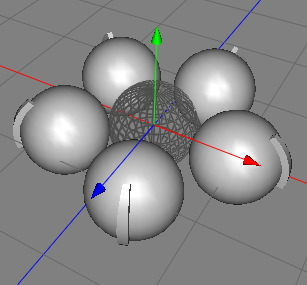

|
Ring ModifierThe ring modifier creates copies of the polygons of a polygon object and position them around a circle with a certain radius. This tool can be used to model any type of object which has some rotational symetry like the spokes of a bicycle wheel for example.  Properties
|